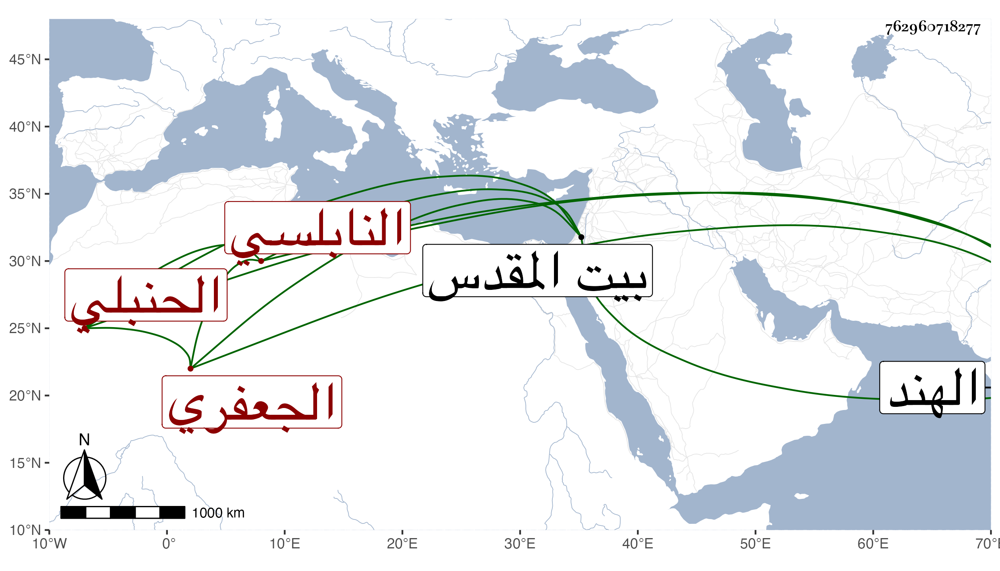

0902Sakhawi.DawLamic.ITO20230111-ara1.EIS1600.762960718277
Biography ID: 762960718277
948
علي بن محمد بن إبراهيم العلاء أبو الحسن الجعفري النابلسي الحنبلي أخو إبراهيم الماضي ويعرف بابن العفيف . ولد كما كتبه بخطه في سنة اثنتين وخمسين وسبعمائة ، وسمع على الميدومي المسلسل وعلى صفية ابنة عبد الحليم الحنبلية في سنة خمس وسبعين جزء ابن الطلاية قال : أنابه الأبرقوهي وعلى أبي الحسن علي بن أحمد بن إسماعيل الفوي في سنة تسع وسبعين جزءا فيه منتقى أحاديث مسلسلات بحرف العين من مسند الدارمي وعلى أبي حفص بن أميلة أمالي ابن سمعون وغيرها ، وحدث لقيه شيخنا في رحلته فسمع عليه الأول من أمالي ابن سمعون وكذا سمع عليه من شيوخنا التقي أبو بكر القلقشندي وحدثنا عنه في بيت المقدس بأشياء ، وآخر ما وقفت عليه مما سمعه منه ما أرخ بجمادى الآخرة سنة تسع وثمانمائة ووقفت له على تصنيفين أحدهما في وصف الحمام سماه رشف المدام نقل فيه عن ابن رجب ووصفه شيخنا فكأنه أخذ عنه الفقه وقال أنه اجتمع في سنة تسع وتسعين بالقاقون بشخص هندي ذكر له أن عمره نحو مائة وثلاثين سنة وأنه سأله أببلاد الهند باقلاء فقال : لا وقال إن سبب تصنيفه أنه تذاكر هو والغياث أبو الفرج عبد الهادي بن عبد الله البسطامي ما عندهما من ذلك فاقتضى جمعه وأورد فيه من نظمه :
| عجبت لأصوات الحمائم إذ غدت | غناء لمسرور ونوحا لمحزون |
| وندبا لمفقود وشجوا لعاشق | وشوقا لمشتاق وتنهيد مفتون |
وقوله مواليا :
| حمامة الدوح نوحي واظهري ما بك | وعددي واندبي من فرقة أحبابك |
| لا تكتمي واشرحي لي بعض أوصابك | أظن ما نابني في الحب قد نابك |
ثانيهما في الوداع سماه كشف القناع في وصف الوداع أو توزيع المكروب في توديع المحبوب جمع فيه ما وقف عليه من الأشعار التي في الوداع يكون في نصف مجلد عمله عند وداع البسطامي المذكور وأخويه عبد اللطيف وعبد الحميد البسطاميين والشمس أبي عبد الله محمد الناصرى وأورد فيه من نظمه قصيدة أولها :
| إنسان عيني بالمدامع يرعف | وأظنها كبدي تذوب فتترف |
| والقلب في جمر الغضا متقلب | إذ هددوه بالفراق وأرجفوا |
وأخرى أولها :
| صب جرت مذ جرى التوديع أدمعه | وأحرقت بلهيب الشوق أضلعه |
| وفارق الصبر والسلوان حين نأى | وأوحشت عنده والله أربعه |
